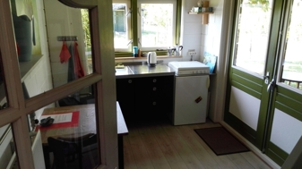
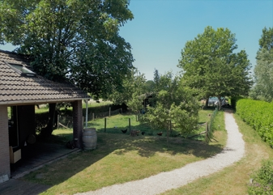
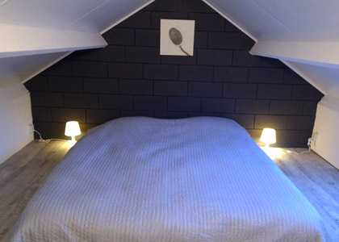

Het is lastig om na een gesprek vol stof tot nadenken en -voelen direct terug te keren naar huis of werk. Stof heeft tijd nodig om neer te dwarrelen, inzicht moet rijpen. Dan helpt het om een wandeling of fietstocht te maken, een boek ter hand te nemen, in stilte te zijn, te schrijven of slapen.
Misschien verlang je naar een plek om je te kunnen concentreren op het schrijven van een boek of scriptie, het uitwerken van een prille droom of concreet ondernemingsplan, om te tekenen, muziek te maken, te fotograferen of mediteren.
Het Tuinhuis kan die plek voor jou zijn.
Het Tuinhuis
Je hebt deze kleine woning geheel tot je beschikking. De keuken en het terras kijken uit op weiden en akkers, kippen en schapen. De inrichting is eenvoudig, maar comfortabel.
Gastverblijf & Goed Gesprek (G&G)
Het kan zijn dat je niet alleen behoefte hebt aan een goed gesprek, maar ook aan stilte, tijd en ruimte om tot jezelf te komen. Soms vormt je thuissituatie een bron van onrust en is het heilzaam om daar even vandaan te zijn.
Ik bied je de mogelijkheid van een verblijf in mijn Tuinhuis gecombineerd met één of meer coachingsgesprekken. Jij bepaalt de duur van het verblijf, het ritme en de vorm van onze samenwerking. Het gesprek kan al wandelend plaats vinden, maar we kunnen ook kiezen voor een combinatie van gesprek, lichaamswerk, geleide meditatie, een opstelling en passende opdrachten.
Dit arrangement kun je individueel boeken, maar ook met tweeën (echtpaar, ouder en kind, vrienden).
De Omgeving
Het vlakbij gelegen, schilderachtige stadje Ravenstein biedt diverse eet- en cateringmogelijkheden, een supermarkt en andere winkels. De omgeving is rijk aan cultuur en wandel- en fietsroutes. De Maas en uiterwaarden liggen aan je voeten.
Rotterdam
70 minuten
Amsterdam
70 minuten
Zwolle
60 minuten
Maastricht
80 minuten
Fotoimpressie



